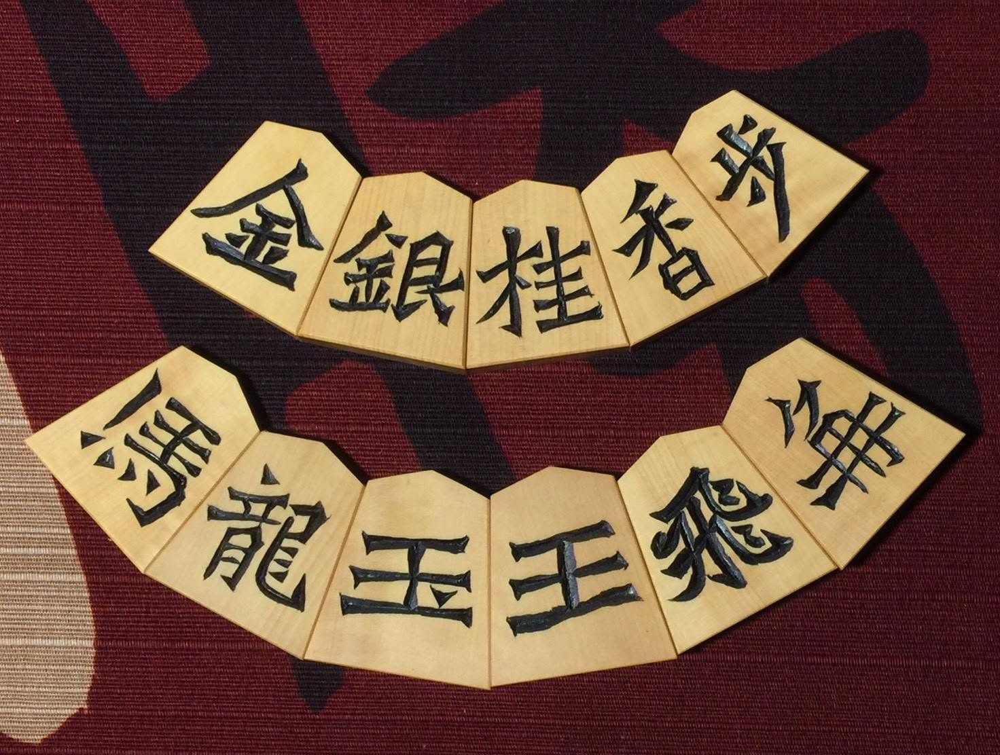

林震煌的將棋駒01 / 14
一切都從棋開始。
木材的表情、文字的姿態、拿在手中的觸感，小小棋駒兼具對弈與欣賞的樂趣。
自幼爸爸教我下象棋，到日本九州大學留學期間學會了下將棋。回台灣後持續透過將棋交流，2012 年開始向訪台的駒師學習製駒。
為了以自己的文字製作棋駒，我也投入書法學習，並不斷改良工具、摸索適合自己的製作方式。製駒讓我對棋的喜愛，與動手創作的樂趣相遇。
十件作品，各有風貌。

菱湖書欣賞作品 ↗

蜀紅書欣賞作品 ↗

魚龍書欣賞作品 ↗

魚龍一字書欣賞作品 ↗

英朋書欣賞作品 ↗

清定書欣賞作品 ↗

王鐸書欣賞作品 ↗

瘦金書欣賞作品 ↗

龍門四品書欣賞作品 ↗

金農書欣賞作品 ↗
THE MAKER
作者介紹 — 林震煌
九州大學工學博士｜國立臺灣師範大學名譽教授
曾從事化學及美術的教學與研究。製駒師承富月老師，書法師承林隆達老師。
重視材料的特性與動手實作，探索書法美感與對局辨識性的平衡，也自行製作字母紙，讓文字個性融入五角形棋駒。
作品落款隨製作時期而有所不同，本網站統一以作者本名「林震煌」介紹。
閱讀製駒相關報導（47NEWS） ↗